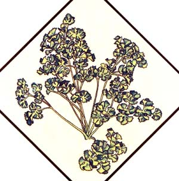
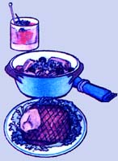
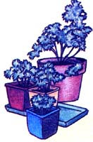

Mother's Herb Garden: Parsley
This simple herb is famous for both its culinary and medicinal purposes.
By the Mother Earth News editors
March/April 1983
Lately, more and more people have begun to understand just how limited - in both variety and nutritional value - our "modern" diets hove become. This realization has sparked a new and widespread interest in the culinary and therapeutic uses of herbs, those plants which - although not well known today - were, just one short generation ago, honored ''guests" on the dinner tables and in the medicine chests of our grandparents' homes. In this regular feature, Mother will examine the availability, cultivation and benefits of our ''forgotten" vegetable foods and remedies, and - we hope - help prevent the loss of still another bit of ancestral lore.
Of all the world's herbs, perhaps none is more widely known than parsley. Brilliantly green and packed with nutrition, it has long been famous for its medicinal and culinary uses. Furthermore, this important herb has been classified and reclassified through the ages with the result that it has not one, but several scientific names in current use. Most modern references list it as Petroselinum sativurn, but the plant is also known as P. hortense, P. crispum, Apium petroselinum, A. hortense, and Carum petroselinum.
A biennial with perennial tendencies, parsley is native to the Mediterranean region where it thrives on cliffs, rocks and old walls. In North America it's usually treated as an annual, and is grown successfully in gardens and in containers. It has many bright green, tri-pinnate leaves on long, slender stalks which form a rosette. The plant grows between 6 and 12 inches tall, depending on the variety, and has a long, white taproot like that of its close relative the parsnip. Tiny yellow flowers appear from July through September, but if the herb is to be used for the kitchen, it should be cut back and not allowed to bloom, as the blossoming will adversely affect the flavor.
Parsley seed, which should be available almost everywhere garden supplies are sold, has a slow and somewhat patchy germination rate. Sow it in early spring, selecting a site with partial shade and good, well-worked, humus-rich soil. Barely cover the seeds, and keep the earth moist but not soggy.
There are two popular parsley varieties: the plain-leaved, "Italian" type (which has superior flavor), and the curled-leaf type (which makes the most attractive garnish). Whichever kind you grow, harvest the fresh, mature stems and leaves by cutting them about an inch above the ground. Although it's used fresh whenever possible, parsley dries beautifully, retaining its green color.
Parsley's uses run the gamut from ancient remedies and folk rites to modern kitchen "magic." The Greeks recommended it as a cure both for bad breath and for the stupefying effect of wine. Its root, sliced into soup, was said to strengthen weak or sensitive people, while a tea made from the crushed leaves was applied to the scalp to fight vermin. The roots and leaves, prepared in various ways, have been used to combat dropsy, conjunctivitis, asthma, coughs and bruises. An infusion (made by steeping 1 cup of packed leaves and stems for 15 minutes in a quart of boiling water) was administered for gallstones.
Of course, this cheerful little plant is most famous today as a flavoring and garnish. Fresh, sautéed, simmered or baked - in soups, stews and salads; on meat, fish, or fowl; and in beverages, stuffings and casseroles - it lends special piquancy to the meal. Parsley is a major ingredient in the renowned seasoning blends known as fines herbes and bouquet garni. It's probably most familiar as a sprig of greenery garnishing a tasty dish. Many folks, however, fail to realize that the herb is a powerhouse of minerals and vitamins, and may contain more nutrition, by weight, than the meal it decorates!
The ancient Greeks said that Heracles used parsley for his garlands, and so it was woven into crowns for victors. It was also said to have grown where a legendary hero was devoured by serpents, and was therefore used in wreaths for graves and as a planting over burial sites, where it made a lush, green carpet.
Parsley was believed to bring bad luck if transplanted (probably because the long taproot makes moving it quite chancy) - and, in fact, the herb was supposed to be planted only on Good Friday, or by a pregnant woman! Even then, things didn't go easily: The seeds take so long to germinate that they were once said to go to the Devil and back seven times!
|
 MOTHER EARTH NEWS STAFF Parsley is great as both a garnish and flavoring. |
 MOTHER EARTH NEWS STAFF Given many names, the most common for parsley is Petroselinum sativum. |
 MOTHER EARTH NEWS STAFF Parsely garnish is actually very nutritious. |
|
 MOTHER EARTH NEWS STAFF Parsely also grows well in containers. |
|
|